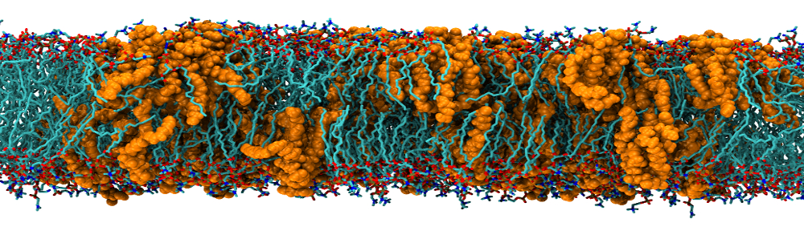

Python based lipid BILayer molecular simulation analysis Toolkit¶


PyBILT is a Python toolkit developed to analyze molecular simulation trajectories of lipid bilayers systems. The toolkit includes a variety of analyses from various lipid bilayer molecular simulation publications.
The analyses include:
- Mean Squared Displacement (MSD)
- Diffusion coefficent estimators (from MSD curves) - includes Einstein relation, linear fit, and anomalous diffusion fit.
- Area per lipid estimators
- Bilayer thickness
- Displacement Vector (flow) maps and correlations
- Deuterium order parameter
- Orientation parameters
- Mass and Electron Density Estimators
- and more!

Install¶
Warning: PyBILT is still under heavy development and may rapidly change.
PyBILT run dependencies¶
PyBILT has the following major dependencies that need to be installed before it can be run:
- MDAnalysis 0.16.2
- NumPy 1.11.3
- SciPy 0.18.1
- Matplotlib 2.0.0
- Seaborn 0.7.1
The versions of the above packages are the latest that the pybilt package has been tested with under Anaconda 4.3.1 Python 2.7; these are the package versions included in the conda environment.yml file. Therefore, to reproduce the environment that PyBILT has been tested under it is recommended that you install Anaconda Python version 4.3.1 Python 2.7 before installing PyBILT. PyBILT has yet to be tested outside of an Anaconda environment.
The following section describes the process for setting up the dependencies and installing the ‘pybilt’ package using a conda environment and the setup.py script.
Setup and install using Anaconda’s conda tool¶
First, clone or download the GitHub repo
git clone https://github.com/blakeaw/PyBILT.git
The file environment.yml has been provided to allow for easy setup of a new environment with all the appropriate dependencies using the conda tool. From the PyBILT root run
conda env create -f environment.yml
which will create a new conda environment named pybilt with the appropriate dependencies. Then activate the environment
source activate pybilt
Next, run the setup.py script with install,
python setup.py install
to install the ‘pybilt’ package into the pybilt environment.
Quick overview of PyBILT¶
PyBILT is composed of 2 primary analysis packages:
- bilayer_analyzer – The bilayer_analyzer is an analysis package that
is designed to analyze (quasi) planar lipid bilayer
systems. It is accessed through the BilayerAnalyzer
object, which can be imported via:
from pybilt.bilayer_analyzer import BilayerAnalyzer. The BilayerAnalyzer features automatic dynamic unwrapping of coordinates and leaflet detection. The bilayer_analyzer works on a multiple-representation model, whereby the various analyses are conducted using different representations of the bilayer lipids. Bilayer lipids can be represented using the following four representations:- All atom
- Centers-of-mass – Each lipid (or selection of atoms from each lipid) is reduced to a center-of-mass.
- Grid (or lipid grid) – The lipids are mapped to two-dimensional grids (one for each leaflet) in the style of the GridMAT-MD method
- Vectors - Each lipid is converted to a vector representation using select reference atoms (or sets of reference atoms) that are used to compute the head and tail of the vector; e.g., a lipid tail atom to lipid head atom, or P-N vectors.
The bilayer_analyzer features various types of analyses and the use of different representations is handled internally based the requirements and design of each analysis type. See the documentation for more details on individual analyses and the representations they use.
- mda_tools – This package includes various modules and functions for directly analyzing and operating on MDAnalysis trajectories and objects. e.g. functions to compute density profiles.
Additional packages include:
- lipid_grid – The lipid grid module can be used construct “lipid grid” grid representations of lipid bilayers, which can be used to accurately estimate quantities such as area per lipid.
- com_trajectory – This module can be used to construct a center of mass trajectory (COMTraj) out of an MDAnalysis trajectory, which is useful for computing quantities like mean squared displacement. The COMTraj is designed to work with bilayers.
- plot_generation – This module has several pre-written plotting functions (using matplotlib and seaborn) for some of the properties that can be computed from functions in the other modules. e.g. mean squared displacement and area per lipid.
Additional Documentation/Tutorials¶
In addition to the documentation, there are currently a few Jupyter IPython notebooks that provide some examples and show some basic usage. More of these are also in the pipeline. Although they are also not fully extensive, the tests can serve as a useful place to examine some basic usage and functionality.
Contact¶
To report problems or bugs please open a GitHub Issue. Additionally, any comments, suggestions, or feature requests for PyBILT can also be submitted as a GitHub Issue.
For any other inquiries, including questions about PyBILT use or implementation, you can contact Blake directly via e-mail at either blake.a.wilson@vanderbilt.edu or blakeaw1102@gmail.com; please include “PyBILT inquiry” in the e-mail subject line.
Contributing¶
If you would like to contribute directly to PyBILT’s development please
- Fork the repo (https://github.com/blakeaw/PyBILT/fork)
- Create a new branch for your feature (git checkout -b feature/foo_bar)
- Create test code for your feature
- Once your feature passes its own test, run all the tests using pytest (python -m pytest)
- Once your feature passes all the tests, commit your changes (git commit -am ‘Add the foo_bar feature.’)
- Push to the branch (git push origin feature/foo_bar)
- Create a new Pull Request
Acknowledgments¶
- A special thanks to James Pino (https://github.com/JamesPino) for his inciteful comments and suggestions that have helped improve the quality of this code, and thanks to him for pointing out some very useful coding tools.
- Thanks to my advisors, Carlos F. Lopez and Arvind Ramanathan, for catalyzing this project and for providing me with the space and means to pursue it.
Built With¶
- ANACONDA - ANACONDA Python distribution and CONDA package and environment manager
- PyCharm - Primary Text Editor/IDE
- ATOM - Secondary Text Editor
- Sublime Text - Text Editor used in earlier work
- Landscape - Code quality analysis and tracking
- Git - Version control
- GitHub - Development Platform and repository storage
- Sphinx - Python documentation generator
- recommonmark - A docutils-compatibility bridge to CommonMark.
- Read the Docs - Documentation hosting
- docstring-coverage - A simple audit tool for examining python source files for missing docstrings.
Core Developers¶
- Blake A Wilson - Currently a Postdoctoral Fellow at Vanderbilt University
- Vandy e-mail: blake.a.wilson@vanderbilt.edu
- Gmail: blakeaw1102@gmail.com
- Blake’s VU Website
- Also find me on LinkedIn and Research Gate